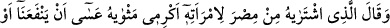

sebebi Yûsuf’u bulmuş olmalarıydı. Bir şeyi bulan, ona fazla değer vermez yahut
bulduğu şeyde hakkı olan birisi çıkıp da onu elinden alabilir diye kendine fazla
güvenmez. Dolayısıyla da ilk müşteriye hem de çok az bir değer karşılığında veriverir.
Üstelik Yûsuf bu kadar güzelken!…
Burada zâhir güzelliğin Allah katında hiçbir değeri olmadığına ve esas güzelliğin
batınî güzellik olduğuna işaret vardır. Bir hadiste şöyle buyrulur: “Allah sizin
sûretlerinize ve mallarınıza değil, kalblerinize ve amellerinize bakar.”[19] Yani
kalbleriniz ve sâlih amelleriniz varsa mutlaka makbulsünüzdür. Güzel bir sûrete, fazla
mala ister sahip olun ister olmayın, fark etmez. Ama bunlar yoksa makbûl olamazsınız.
Yûsuf’un az bir pahaya satılması, sizin nefislerinizi az bir şehvet karşılığında
satmanızdan daha hayret verici değildir. Şu halde kendini tutmak, korunmak ve kanaat
sahibi olmak lâzımdır.
Molla Câmî (k.s.) der ki:
Kim ki kanaat hazinesini dünya hazinesine değişti
Mısırlı Yûsuf ’u çok az pahaya sattı demektir.
Abdullah b. Ömer’in âzadlısı Nâfi, İmam Şâfiî’nin üstadıydı. Nâfî, ölüm vakti
“Burayı kazın.” dedi. Kazdılar. Oradan bir testi içinde otuz bin dirhem çıktı.
“Cenazemden döndüğünüzde bunu fakire verin.” dedi. Ona:
“Ey şeyh, senin gibi bir kimse para biriktirir m?!” dediler. Şöyle cevap verdi:
“Bu dar vakit (ölüm vakti) hakkı için bu paranın zekatı benim boynumda değildir (yani
zekatını eda ettim). Asla ailemi ve çocuklarımı sıkıntı içinde bırakarak bu parayı
biriktirmedim. Fakat bir şey arzu ettiğimde, ileride paraya ihtiyacım olduğunda
başkasından istemek gerekir diye o parayı biriktirdim ki önüme çetin bir gün gelir de
çok muhtaç bir duruma düşersem beyinsizlerin kapısına gitmek lazım gelmesin.”
Bu hikâyede nefis ve tabîat ile mücâhedeye delâlet eden hususlar vardır.
Birincisi; bu malı gizleyip hazine yapmak için değil, sarf etmek için biriktirmiştir.
İkincisi; tabiatının gereklerine ve arzularına mâni olmuştur. Hisler ve kuvveler kalbin
kadrini bilmez ve nefsin elde edeceği çok az bir fani haz karşılığında kalbi satıverir.
Çünkü bunlar, fani dünya nimetlerinden zevk alma istidadında iken, kalb bâkî olan
uhrevî nimetlerden zevk alma, hatta rabbânî şâhidleri görmekten haz alma
istidâdındadır. Kalbe temiz bir içecek içirildiği zaman cemâl ve celâl tecelli eder, bu
suyun fazlası nefis, kuvve ve hislerin arzına dökülür, onlar da bundan nasiplenirler.
Çünkü ‘Asil, cömert kimselerin kadehinden toprağın da payı vardır.’